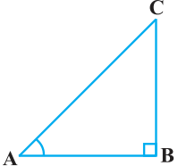
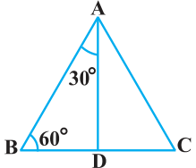
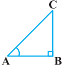
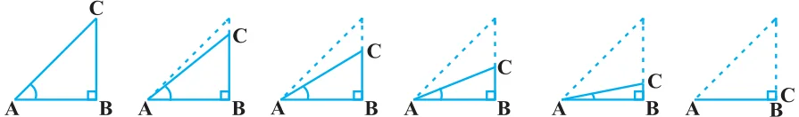
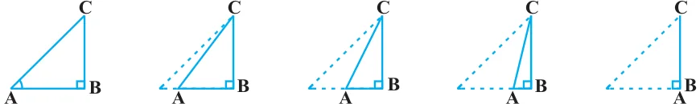
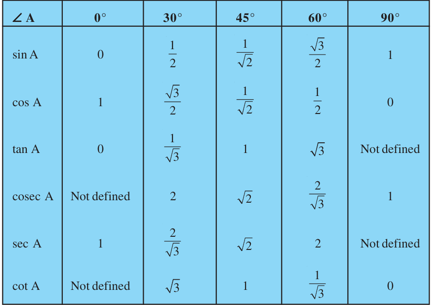
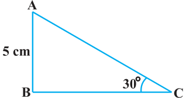
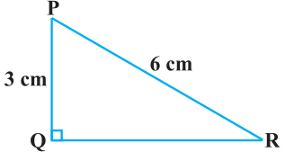

From geometry, you are already familiar with the construction of angles of \(30 ^{\circ}\) , \(45 ^{\circ}\) , \(60 ^{\circ}\) and \(90 ^{\circ}\) . In this section, we will find the values of the trigonometric ratios for these angles and, of course, for \(0 ^{\circ}\) .
Trigonometric Ratios of \(45 ^{\circ}\)

In \(\triangle ABC\), right-angled at B, if one angle is \(45 ^{\circ}\) , then the other angle is also \(45 ^{\circ}\) , i.e., \(\angle A = \angle C = 45 ^{\circ}\) (see Fig. 8.14).
So, \(BC = AB\) (Why?)
Now, Suppose \(BC = AB = a\). Fig. 8.14 Then by Pythagoras Theorem, \(AC^{2} = AB^{2} + BC^{2} = a^{2} + a^{2} = 2a^{2}\),
and, therefore, \(AC = a 2 \cdot\)
Using the definitions of the trigonometric ratios, we have :
sin \(45 ^{\circ} =\) side opposite to angle \(45 ^{\circ} = = = 1\) hypotenuse \(\frac{BC}{AC} \frac{a}{a2} 2\)
cos \(45 ^{\circ} =\) side adjacent toangle \(45 ^{\circ} = = = 1\) hypotenuse \(\frac{AB}{AC} \frac{a}{a2} 2\)
side opposite to angle \(45 ^{\circ}\)
side adjacent to angle \(45 ^{\circ} \frac{BC}{AB} \frac{a}{a}\)
tan \(45 ^{\circ} = = = = 1\)
Also, cosec \(45 ^{\circ} = \frac{1}{sin45 ^{\circ} }\) \(= 2\) , sec \(45 ^{\circ} = \frac{1}{cos 45 ^{\circ} }\) \(= 2\) , cot \(45 ^{\circ} = \frac{1}{tan45 ^{\circ} }\) \(= 1\).
Trigonometric Ratios of \(30 ^{\circ}\) and \(60 ^{\circ}\)

Let us now calculate the trigonometric ratios of \(30 ^{\circ}\) and \(60 ^{\circ}\) . Consider an equilateral triangle ABC. Since each angle in an equilateral triangle is \(60 ^{\circ}\) , therefore,
\(\angle A = \angle B = \angle C = 60 ^{\circ}\) .
Draw the perpendicular AD from A to the side BC (see Fig. 8.15). Now \(\triangle ABD \cong \triangle ACD\) (Why?) Fig. 8.15 Therefore, \(BD = DC\) and \(\angle BAD = \angle CAD\) (CPCT) Now observe that: \(\triangle ABD\) is a right triangle, right-angled at D with \(\angle BAD = 30 ^{\circ}\) and \(\angle ABD = 60 ^{\circ}\) (see Fig. 8.15).
As you know, for finding the trigonometric ratios, we need to know the lengths of the sides of the triangle. So, let us suppose that \(AB = 2a\).
Then, \(BD = 1 BC = a\)
and \(AD^{2} = AB^{2} - BD^{2} = (2a)^{2} - (a)^{2} = 3a^{2}\),
Therefore, \(AD = a 3\)
Now, we have : sin \(30 ^{\circ} = \frac{BD}{AB} = \frac{a}{2a} = \frac{1}{2}\) , cos \(30 ^{\circ} = \frac{AD}{AB} = \frac{a3}{2a} = \frac{3}{2}\) tan \(30 ^{\circ} = \frac{BD}{AD} = \frac{a}{a3} = \frac{1}{3}\) .
Also, cosec \(30 ^{\circ} = \frac{1}{sin 30 ^{\circ} }\) \(= 2\), sec \(30 ^{\circ} = \frac{1}{cos 30 ^{\circ} }\) \(= \frac{2}{3}\)
cot \(30 ^{\circ} = \frac{1}{tan30 ^{\circ} }\) \(= 3\) .
Similarly, sin \(60 ^{\circ} = \frac{AD}{AB} = \frac{a3}{2a} = \frac{3}{2}\) , cos \(60 ^{\circ} = \frac{1}{2}\) , tan \(60 ^{\circ} = 3\) , cosec \(60 ^{\circ} = \frac{2,}{3}\) sec \(60 ^{\circ} = 2\) and cot \(60 ^{\circ} = \frac{1}{3} \cdot\)
Trigonometric Ratios of \(0 ^{\circ}\) and \(90 ^{\circ}\)
Let us see what happens to the trigonometric ratios of angle A, if it is made smaller and smaller in the right triangle ABC (see Fig. 8.16), till it becomes zero. As \(\angle A\) gets smaller and smaller, the length of the side BC decreases.The point C gets closer to point B, and finally when \(\angle A\) becomes very close to \(0 ^{\circ}\) , AC becomes almost the same as AB (see Fig. 8.17). Fig. 8.16


When \(\angle A\) is very close to \(0 ^{\circ}\) , BC gets very close to 0 and so the value of sin \(A = \frac{BC}{AC}\) is very close to 0. Also, when \(\angle A\) is very close to \(0 ^{\circ}\) , AC is nearly the same as AB and so the value of cos \(A = \frac{AB}{AC}\) is very close to 1. This helps us to see how we can define the values of sin A and cos A when \(A = 0 ^{\circ}\) . We define : sin \(0 ^{\circ} = 0\) and cos \(0 ^{\circ} = 1\). Using these, we have :
tan \(0 ^{\circ} = \frac{sin0 ^{\circ} }{cos 0 ^{\circ} } = 0\), cot \(0 ^{\circ} = \frac{1}{tan0 ^{\circ} }\) , which is not defined. (Why?)
sec \(0 ^{\circ} = \frac{1}{cos 0 ^{\circ} }\) \(= 1\) and cosec \(0 ^{\circ} = \frac{1}{sin0 ^{\circ} }\) , which is again not defined.(Why?) Now, let us see what happens to the trigonometric ratios of \(\angle A\), when it is made larger and larger in \(\triangle ABC\) till it becomes \(90 ^{\circ}\) . As \(\angle A\) gets larger and larger, \(\angle C\) gets smaller and smaller. Therefore, as in the case above, the length of the side AB goes on decreasing. The point A gets closer to point B. Finally when \(\angle A\) is very close to \(90 ^{\circ}\) , \(\angle C\) becomes very close to \(0 ^{\circ}\) and the side AC almost coincides with side BC (see Fig. 8.18).

When \(\angle C\) is very close to \(0 ^{\circ}\) , \(\angle A\) is very close to \(90 ^{\circ}\) , side AC is nearly the same as side BC, and so sin A is very close to 1. Also when \(\angle A\) is very close to \(90 ^{\circ}\) , \(\angle C\) is very close to \(0 ^{\circ}\) , and the side AB is nearly zero, so cos A is very close to 0. So, we define : sin \(90 ^{\circ} = 1\) and cos \(90 ^{\circ} = 0\). Now, why don’t you find the other trigonometric ratios of \(90 ^{\circ}\) ? We shall now give the values of all the trigonometric ratios of \(0 ^{\circ}\) , \(30 ^{\circ}\) , \(45 ^{\circ}\) , \(60 ^{\circ}\) and \(90 ^{\circ}\) in Table 8.1, for ready reference.
Table 8.1

Remark : From the table above you can observe that as \(\angle A\) increases from \(0 ^{\circ}\) to \(90 ^{\circ}\) , sin A increases from 0 to 1 and cos A decreases from 1 to 0. Let us illustrate the use of the values in the table above through some examples.
Example 6 : In \(\triangle ABC\), right-angled at B, \(AB = 5\) cm and \(\angle ACB = 30 ^{\circ}\) (see Fig. 8.19). Determine the lengths of the sides BC and AC. Solution : To find the length of the side BC, we will choose the trigonometric ratio involving BC and the given side AB. Since BC is the side adjacent to angle C and AB is the side opposite to angle C, therefore Fig. 8.19

\(\frac{AB}{BC} =\) tan C
i.e., \(\frac{5}{BC} =\) tan \(30 ^{\circ} = \frac{1}{3}\) which gives \(BC = 5 3\) cm
To find the length of the side AC, we consider
sin \(30 ^{\circ} = \frac{AB}{AC}\) (Why?)
i.e., \(\frac{1}{2} = \frac{5}{AC}\)
i.e., \(AC = 10\) cm
Note that alternatively we could have used Pythagoras theorem to determine the third side in the example above,
i.e., \(AC = AB^{2} + BC^{2} = 5^{2} + (5 3)^{2}\) cm \(= 10cm\).
Example 7 : In \(\triangle PQR\), right-angled at Q (see Fig. 8.20), \(PQ = 3\) cm and \(PR = 6\) cm. Determine \(\angle QPR\) and \(\angle PRQ\). Solution : Given \(PQ = 3\) cm and \(PR = 6\) cm.

Therefore, \(\frac{PQ}{PR} =\) sin R
or sin \(R = \frac{3}{6} = \frac{1}{2}\)
So, \(\angle PRQ = 30 ^{\circ}\)
and therefore, \(\angle QPR = 60 ^{\circ}\) . (Why?)
You may note that if one of the sides and any other part (either an acute angle or any side) of a right triangle is known, the remaining sides and angles of the triangle can be determined. Example 8 : If sin (A - B) \(= 1\) , cos (A + B) \(= 1\) , 0 ° < A + B ≤ 90 ° , A > B , find A 2 2 and B.
Solution : Since, sin (A - B) \(= \frac{1}{2}\) , therefore, \(A - B = 30 ^{\circ}\) (Why?) (1) Also, since cos (A + B) \(= \frac{1}{2}\) , therefore, \(A + B = 60 ^{\circ}\) (Why?) (2) Solving (1) and (2), we get : \(A = 45 ^{\circ}\) and \(B = 15 ^{\circ}\) .